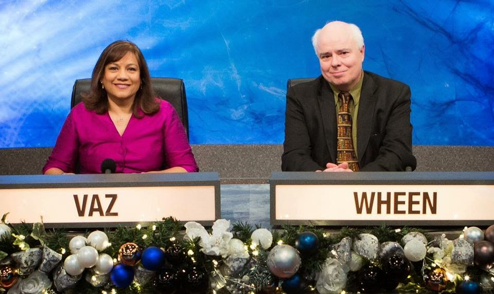
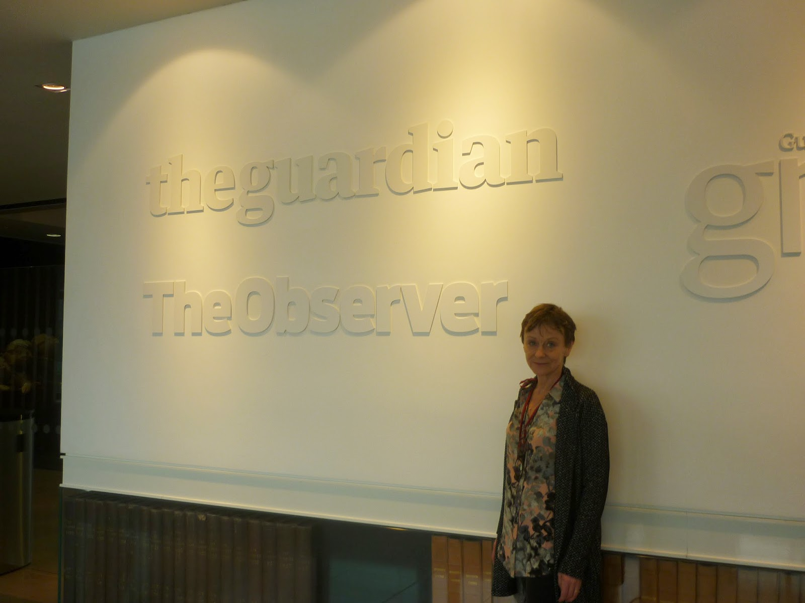

My friend Nicci Gerrard had been asked to appear on
Radio 4 You and Yours to talk about John's Campaign. At that
moment she was hurtling between Lyon, where she was taking part in a literary festival as 50% of the novelist 'Nicci French', and Worcester, where she was supporting her octogenarian mother in hospital. I was trying to be helpful, discussing possible arrangements with the R4 researcher. He wondered who else might they
invite onto the programme to comment on the issue of open access for carers
when people living with dementia are admitted to hospital...?
The news peg for the item was a letter written by Norman Lamb MP (Liberal Democrat), Coalition Minister of State for Care and Support, and sent to the chief executives of all the acute hospital trusts in England. He wrote it with Professor Alistair Burns, National Clinical Director for Dementia, and it was the politest of polite letters.
.jpg){kind=link}
The news peg for the item was a letter written by Norman Lamb MP (Liberal Democrat), Coalition Minister of State for Care and Support, and sent to the chief executives of all the acute hospital trusts in England. He wrote it with Professor Alistair Burns, National Clinical Director for Dementia, and it was the politest of polite letters.
“We
are writing to ask you to consider how you may facilitate the
requests of
some
carers of people with dementia to continue their caring role in
hospital; as championed by campaigns such as the John Gerrard Campaign.
The
request is for the carers of people with dementia who are in
hospital, to be allowed the option to stay with that person outside of normal visiting hours
or even overnight.
We are cognisant that this is a practice which hospitals have adopted widely
since the early 1990s for the parents of children staying in
hospital. We are also
conscious that many general hospitals offer accommodation for parents
to stay overnight.
The
Prime Minister’s Challenge on Dementia 2020, launched on the 21
February 2015,
sets out the key aspiration that all health and care environments
should be dementia
friendly and an intention to implement by 2020 a right to stay for
relatives when
a person with dementia is nearing the end of their life. We are
asking that you consider
taking this one step further by allowing the carers of people with
dementia to
remain with the person they care for, where appropriate, during any
stay in
hospital.
We
are aware that the removal of restrictions on visiting hours is not
an action that we
could mandate, but we encourage you to take into account the wishes
of carers and
people with dementia in your efforts to ensure that all hospitals are
becoming more
dementia friendly and as part of a cultural shift towards the
practice of acknowledging
the carers of people with dementia as partners in care.
We
would again like to thank those of you who have already taken steps
to make hospitals
more dementia friendly and accommodating for carers and we urge you
to actively
consider how you might accommodate the preference of some carers of people
with dementia to continue this role in hospital when the person they
care for is
admitted.”
I
had a private giggle when I noticed, from the file name, that this was
version TEN of the letter. What had version one said, I wondered: “Let carers of people with dementia carry on caring when they're in
hospital (if they want to) or else!”? Somehow I didn't
think so. One of the (many) things I've learned over the last few
months of John's Campaign is how comprehensively Andrew Lansley's
Health and Social Care Act (2012) stripped the Secretary of State for
Health (in England) of the power to tell Anyone to do Anything at all.
I'm
an ex-member of the Lib Dems and I thought Norman Lamb was
completely delightful in our meeting when he blushed slightly pink,
turned to his civil servant and said “Is there any reason why I
can't do this?” It was clear that he understood what we
wanted and he was longing to help. Since then he's put his fingers
to the keyboard and tweeted in support of people “needing their
loved ones” when in hospital. This is great – and I'll give an extra huzzah for the
Lib Dems for making mental health issues a centre piece of their election platform. That letter didn't exactly kick John's Campaign right into goal, however.
{kind=link}
The
reference to the Prime Minister's 'Challenge' on Dementia is a
fascinating one and may show some of the strain of being in a
coalition. "We are asking that you consider taking this one step further ..." David Cameron (Conservative) sent us a very friendly
letter and made reference to his aspiration that “by 2020...all
relatives should have a right to stay when a person with dementia is
nearing the end of their life, either in hospital or in the care
home.”
Ungratefully, I was horrified by this. Huh! I thought, who the hell thinks they have any jurisdiction about who stays with whom when they are dying? I checked it out with Maggie Stobbart Rowlands who is the lead nurse of the Gold Standards Framework (leading providers of end-of-life training) and she was pretty surprised as well. It's not just a phrase in a letter, however, it's a proper 'aspiration' in the PM's 2020 Challenge on Dementia (page 37). In fact, the PM is making an important point: currently there is a real problem around dying. Only today (8th April 2015) there was an article in the Nursing Times which said that “only around half of nurses and other frontline clinicians delivering care for people with terminal illnesses believe that patient's needs are being adequately met.” And dementia IS a terminal illness – as Maggie Stobbart Rowlands pointed out to care home managers at a recent Gold Standards Framework conference.
Ungratefully, I was horrified by this. Huh! I thought, who the hell thinks they have any jurisdiction about who stays with whom when they are dying? I checked it out with Maggie Stobbart Rowlands who is the lead nurse of the Gold Standards Framework (leading providers of end-of-life training) and she was pretty surprised as well. It's not just a phrase in a letter, however, it's a proper 'aspiration' in the PM's 2020 Challenge on Dementia (page 37). In fact, the PM is making an important point: currently there is a real problem around dying. Only today (8th April 2015) there was an article in the Nursing Times which said that “only around half of nurses and other frontline clinicians delivering care for people with terminal illnesses believe that patient's needs are being adequately met.” And dementia IS a terminal illness – as Maggie Stobbart Rowlands pointed out to care home managers at a recent Gold Standards Framework conference.
We need to think about dying -- all of us. I remember making a
fuss to ensure that I gave birth to all of my children at home, and home is where most people would prefer to die, supported by those they love. But they don't -- more than half of us die in hospital. One of the last pronouncements of the now defunct Health
Select Committee concerned home-deaths – should we be
entitled to these 'for free'? So maybe David Cameron
wasn't so far off the button when he (or his advisors) included this
potential 'right' in his new Challenge. We've asked people,
as we've trundled round, has the PM's highlighting of dementia in his first Challenge made a difference over the last five years, and people have usually said yes – though some have added that
more money for specialist dementia nurses would have made it better still.
The
Prime Minister ended his letter with a hope that "many more
hospitals" will become dementia-friendly and agree to support carers who
wish to stay with the person they care for and he sent John's
Campaign "his very best wishes".
So that was nice (it was, honestly) but John's Campaign is for the RIGHT of carers to remain with a person with dementia if they are admitted to hospital. It's also for the RIGHT of that person to have their carer with them. It's a human right, just as it is for children to be accompanied by their parents. And, so far, the only politician who has nailed his colours to the mast of entitlement is Andy Burnham of the Labour Party, the most recent shadow Secretary of State for Health. He is committed, he says, to the idea of "Whole Person Care". Much of that personal commitment stems from the moment he discovered he, even as a health minister, was unable to make it possible for his dying sister-in-law to return home to die with her children around her. So, if elected, he pledges that he will revise the NHS constitution to make it a RIGHT for people to remain together with those they love.
So that was nice (it was, honestly) but John's Campaign is for the RIGHT of carers to remain with a person with dementia if they are admitted to hospital. It's also for the RIGHT of that person to have their carer with them. It's a human right, just as it is for children to be accompanied by their parents. And, so far, the only politician who has nailed his colours to the mast of entitlement is Andy Burnham of the Labour Party, the most recent shadow Secretary of State for Health. He is committed, he says, to the idea of "Whole Person Care". Much of that personal commitment stems from the moment he discovered he, even as a health minister, was unable to make it possible for his dying sister-in-law to return home to die with her children around her. So, if elected, he pledges that he will revise the NHS constitution to make it a RIGHT for people to remain together with those they love.
 |
| Valerie Vaz MP and Francis Wheen representing Royal Holloway and Bedford College on UC |
{kind=link}
You'd think I'd put forward Lady Macbeth as a
guest presenter for cBeebies. “We
couldn't possibly do that," he said. "We haven't even asked Norman Lamb to
comment on his own letter. We're not a political programme, you
understand, we mustn't jeopardise Balance.” Then he explained the
concept of purdah and restrictions on broadcasting in a pre-election period. Other John's Campaign friends who are public employees have explained that they too will need to stay quiet until after May 7th. Now I have no quarrel with the concept of
fairness in reporting elections or a proper diffidence on the part of
civil servants to committing unknown, incoming ministers to a policy
they have not chosen. I'm deeply happy that we do have all-party support for our campaign but there's no need for me to pretend that all the political parties have the same enthusiasm for the concept of RIGHTS for people with dementia and their carers.
And, as Nicci and I are not in purdah, there's nothing to stop us from saying so.
 |
| Pre-election restrictions on broadcasting don't apply to print media. Nicci Gerrard at the Observer
For more information on John's Campaign or to read politician's letters in full, please go to our website, www.johnscampaign.org.uk or our Facebook page. Follow on Twitter @johncampaign.
|
{kind=link}